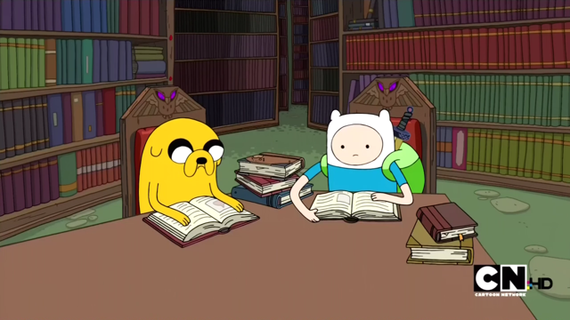
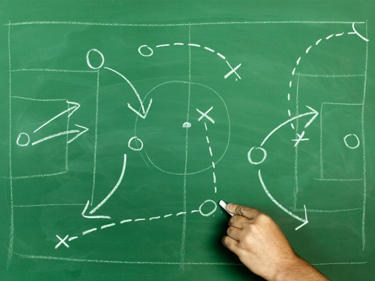

Enough is enough. No more stress, just easy cruising through high school.
Ever wonder what building websites and getting organised have in common? Me neither ! In fact, just like the average
schooler, I tend to spend more time browsing the former than I should. The problems with this habit recur frequently. For example
when a student watches too many videos on Youtube for too long before they remember they have an essay they could
positively swear is due in two weeks. Actually, it is… but that was two weeks ago. Yikes!
Now, even though websites are the common culprits for underproductivity and thus lead to a lack of organisation, I
have decided to make the best of both worlds, or as Luis Ribeiro would say: “fill two needs with one deed”. In order
to improve one’s organisation skills, a website can be made entirely from scratch and serve as a multipurpose tool
that can keep track of deadlines, projects, and personal progress.

Getting organised is all about dedicating an appropriate time to completing your tasks. Become better at
managing your time and it will turn into a lifestyle.
What is the point of this project?
This blog is about getting organised by making your own website. As I go along, I will be incorporating new and
better web design practices, such as using PHP, web frameworks, calendars, graphs, diagrams and an agenda, in order
to enhance my website and increase its pizzazz. My goal is to maintain an efficient digital agenda that I can use to
keep track of my tasks. I would like to share this journey to organisation with you in hopes you can benefit from my project.
This seems cool all right! How can I motivate myself to do this daily?

It's time to draw a GAME PLAN!
While starting a project like this can be a fun afternoon well spent, maintaining it and integrating it into your daily
life is a daunting Mt. Everest-like, gargantuesque commitment that easily whisks you away from your objectives. To
counter this, you’ll need a game plan:
1. Start small and take incremental steps that add up over time. A bird in hand is worth two in the bush, so
don’t forget to start somewhere; big dreams don't come true overnight.
2. Keep a log of the progress you’ve made and write down feedback from others as well personal thoughts.
Having a journal is a great way to stay oriented in the direction you want to go.
3. Set a working schedule, structure the websites such that it requires low maintenance, and most importantly,
DEDICATE SOME TIME TO ACTUALLY USE THE WEBSITE
Pro tip of the day: The goal here is to be organised. Therefore, if you create tools that enable you to
achieve this, be sure to take full advantage of them.
I get by just fine, time crunching, work binging, deadline stressing. Why, oh why should I even consider making an effort?
In case it wasn't crystal clear by the heading, bad habits lead to intensive stress periods that prevent you from
balancing school and life. The problem we high schoolers face in terms of finding the will to get organised stems
from the tolerance towards the “minimal effort” organisational systems we brag about. Sure, I can forgo the planning
process on my assignments, wait until the eve of the due date to start and avoid asking for feedback on my drafts
(which I can also neglect writing), but is it truly worth the cataclysmic panic attacks?
Short answer: NO.
Bonus: assignments don’t have to follow this nonsensical and nightmarish script.
I find this project to be important to share because practising will improve my organisational skills. From personal
experience, the less stress I have to deal with, the better my life is. According to a recent survey of my English
class, this moto is surprisingly a common belief.
Concluding thoughts
So, the underlying concept is to explore a diversity of ideas that contribute to the website
project by easing the task of being organised through web development. Will these ideas be super amazing and work
magically? Good question! We’ll find out together. One thing I can say for sure is that these ideas will be
prototyped, tested and polished in order to develop and consolidate organisational skills because no high schooler
should live with unnecessary stress. This project is a very exciting one I would like to invite you to experience
with me. Next time, I will be talking about the book Atomic Habits and we'll be designing a calendar to mark
down important dates. Together, we can get organised by making our own websites.